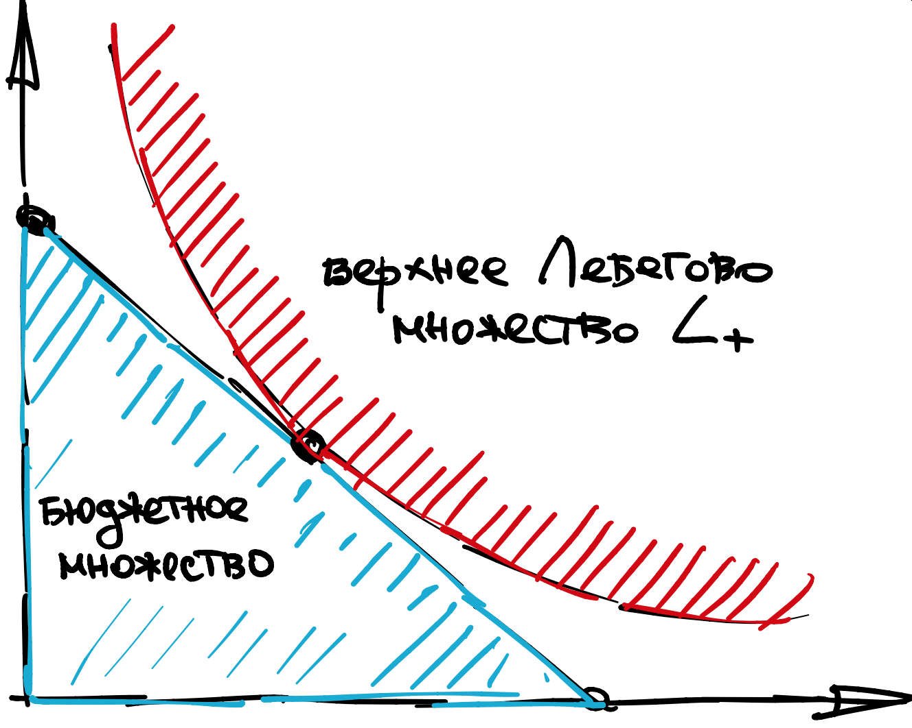

Первая лекция, часть 2
Contents
Первая лекция, часть 2¶
Начала оптимизации¶
Любая оптимизационная задача - это две вещи:
функция, которую мы максимизируем
область определения аргументов, по которым мы максимизируем
Рассмотрим несколько примеров, в которых хорошо видно, что двумя ключевыми свойствами задачи являются: выпуклость/вогнутость самой функции, а также ограниченность и положение области определения.
Example 4
Парабола рогами вниз на отрезке от -1 до 1
Достигает максимума в точке 0.
Парабола рогами вниз на отрезке от -2 до -1
Достигает максимума в точке -1.
Парабола рогами вверх на отрезке от -1 до 1
Достигает максимума в точкax -1 и 1.
Парабола рогами вверх на отрезке от -1 до 1
Достигает максимума в точкax -1 и 1.
Парабола рогами вверх на всей числовой прямой
Не достигает своего максимума, вообще.
Парабола рогами вверх на интервале от -1 до 1
Также не достигает максимума
Существование решений¶
Существование решения, как правило, мы можем легко показать при помощи следующей теоремы
Theorem 2 (Вейерштрасса)
Непрерывная функция на компакте гарантированно достигает своего минимума и максимума.
Что такое непрерывная функция, вы уже знаете.
A компакт в \(\mathbb{R}^n\) - это просто ограниченное и замкнутое множество. В контексте одномерной оптимизации, \([a,b]\) - это компакт, а \((a,b]\), \([a,b)\), \((a,b)\), \([a,\infty)\),\((a,\infty)\) - это все не компакты.
Таким образом, у вас есть всего два сценария, как решение оптимизационной задачи с непрерывной функцией могло бы не существовать: либо оно вообще бесконечно, либо оно конечно, но достигается в точке которая попала на границу области.
Условия первого порядка¶
Если решение лежит внутри области, то обязательно выполнены условия первого порядка. Например, если функция \(U(x, y, z)\) от трех переменных и вы убедили себя, что решение надо искать внутри, то
должны выполняться в оптимальной точке \((x^{\ast}, y^{\ast}, z^{\ast})\). Зачастую граничных точек не так уж и много, и их можно просто перебрать руками, сравнивая значения. Затем можно выбрать наилучшую из граничных и внутренних точек, удовлетворяющих УПП.
Условия второго порядка¶
Иногда число кандидатов на оптимум, прошедших условия первого порядка, можно дополнительно сузить за счет условий второго порядка.
Если Гессиан во внутренней точке отрицательно определен \(\nabla^2 U \leqslant 0\) (парабола рогами вниз), то это локальный максимум и этот кандидат проходит отбор. Если Гессиан положительно определен \(\nabla^2 U \geqslant 0\) (парабола рогами вверх), то это локальный минимум и этот кандидат не проходит отбор.
Если у вас остался один кандидат, то он и является оптимумом. Если кандидатов несколько, то надо опять сравнивать значения функции руками.
Выпуклые задачи¶
К счастью, в экономике зачастую удается показать, что поверх непрерывности функция полезности
либо вогнутая
либо она монотонное преобразование вогнутой
либо она квазивогнутая
Если вдобавок к этому область определения не только компакт, но и выпуклое множество, то, во-первых, решение всегда единственное, а во-вторых, условия второго порядка можно не проверять, поскольку они (или что-то очень похожее на них) выполнены глобально.
Очень важно уметь, глядя на задачу, определять выпуклая она или нет, чтобы не тратить время на анализ второго порядка. Общий алгоритм решения выпуклых и непрерывных задач на компакте очень простой:
То есть мы набрасываемся на такую задачу, как будто решение у нее внутреннее. Затем проверяем, что мы не ошиблись. Если кандидат оказался внутри, то это и есть правильный ответ. Если же нет, то мы заново ищем вдоль границы, исходя из геометрических соображений.
Линии уровня¶
Наконец, линии уровня - это очень удобный инструмент для отлова и классификации кандидатов на решение оптимизационной задачи.
Definition 13
Линией уровня полезности \(U\), проходящей через точку \(x\) называется множество всех точек \(y \in X\) таких, что \(U(y) = U(x)\).
Definition 14
Кривой безразличия предпочтений \(\succcurlyeq\), проходящей через точку \(x\) называется множество всех точек \(y \in X\) таких, что \(x \sim y\).
Совершенно ясно, что в контексте представлений предпочтений полезностями и наоборот, кривая безразличия и линия уровня - это одно и то же.
Рассмотрим несколько примеров полезностей
Example 5
Рассмотрим полезность вида: \(U(x, y) = ax + by\). Тогда линия уровня ищется следующим образом:
Линия уровня - это прямая вида \(y = \alpha x + \beta\).
Рассмотрим полезность вида: \(U(x, y) = a \log x + \log y\). Тогда линия уровня ищется следующим образом:
Линия уровня - это гипербола вида \(y = x^\alpha \beta\).
Рассмотрим полезность вида: \(U(x, y) = \min(ax, by)\). Тогда линия уровня ищется следующим образом:
Линия уровня - это конкатенация горизонтальной и вертикальной линий, соединенных вдоль \(ax = by\).
Зачем нужны линии уровня?¶
Очень часто в задачах есть выпуклое ограничение типа неравенства, например, бюджетное ограничение. В таком случае все кандидаты будут формально не внутренние. Однако с точки зрения выпуклой оптимизации, такие точки можно интерпретировать как “внутренние”, если решать методом Лагранжа. О методе Лагранжа мы поговорим на следующей лекции.
Внутреннее решение выпуклой (и гладкой) оптимизационной задачи можно охарактеризовать как точку касания линии уровня с выпуклым ограничением, см. иллюстрацию.
{kind=link}
Иногда задача вообще не является гладкой, как в случае Леонтьефских полезностей. Тогда линии уровня - это самый быстрый и надежный подход к решению задачи.